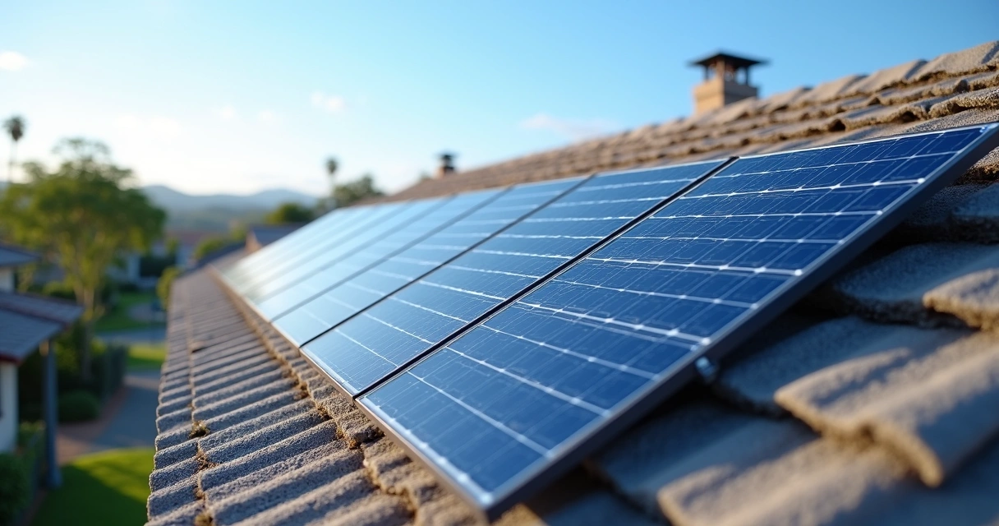
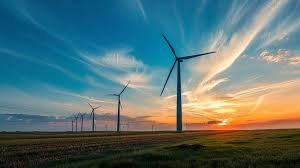
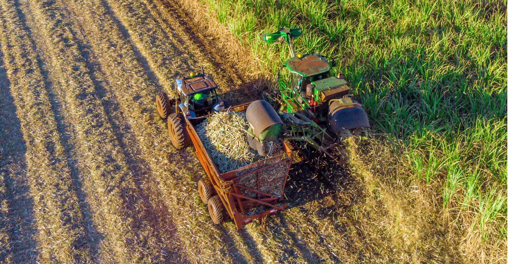
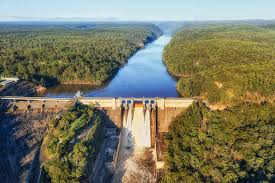

Energias Renováveis no Campo
Soluções sustentáveis para o agronegócio brasileiro
Explorar Tecnologias.jpg)
Soluções sustentáveis para o agronegócio brasileiro
Explorar Tecnologias
As energias renováveis no campo têm ganhado espaço porque ajudam a reduzir custos, aumentam a autonomia energética das propriedades rurais e diminuem impactos ambientais.
No Brasil, especialmente no Paraná, as principais fontes são: Energia Solar, Biogás, Eólica, Biomassa e Pequenas Centrais Hidrelétricas.

A mais utilizada. Painéis fotovoltaicos para irrigação, cercas elétricas, bombeamento de água e resfriamento de leite.

Produzido a partir de esterco e resíduos orgânicos. Gera eletricidade, calor e fertilizantes.

Pequenas turbinas para propriedades com ventos constantes. Potencial alto no Sul e Nordeste.

Bagaço de cana, casca de arroz, lenha de reflorestamento e resíduos agrícolas.

Aproveitamento de rios e quedas d'água com alta eficiência.
Redução de custos, economia a longo prazo e possibilidade de venda de excedente.
Redução de emissões, aproveitamento de resíduos e produção sustentável.
Desenvolvimento rural, geração de empregos e melhoria da qualidade de vida.
Programas como:
O Brasil tem potencial para ser líder global em energia renovável aplicada ao agronegócio.